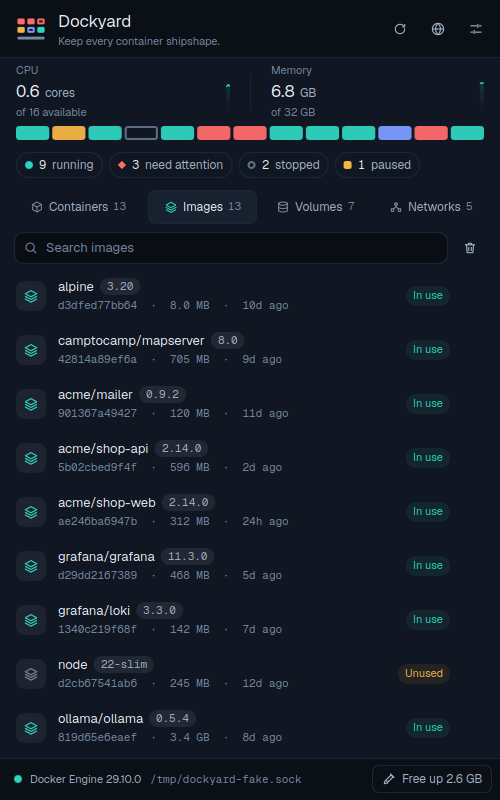

Docker und Podman in bester Ordnung, direkt im KDE-Panel
Dockyard ist ein kostenloses Open-Source-Widget für Plasma 6. Es zeigt jeden Container auf einen Blick und lässt dich starten, stoppen, neu starten, Protokolle lesen und aufräumen, ohne den Desktop zu verlassen. Gemacht für Fedora KDE.
Kostenlos · MIT-Lizenz · Keine Telemetrie · Docker, rootless Docker und Podman

Deine ganze Flotte, gezeichnet wie die Ladungsliste eines Schiffs
- Läuft
- Braucht Aufmerksamkeit
- Pausiert
- Gestoppt
Jede Zelle ist ein Container, nach Zustand eingefärbt. Die Zellen behalten ihren Platz, wenn sich ein Zustand ändert, so fällt ein Problem auf, ohne dass du suchen musst. Ein Klick auf eine Zelle springt in der Liste zu diesem Container. Jeder Zustand hat außerdem eine eigene Form und ist auch ohne Farbsehen lesbar.
Wissen, bevor etwas ausfällt
CPU und Speicher von allem, was läuft, mit Verlauf. Filter per Klick: laufen, brauchen Aufmerksamkeit, gestoppt. Stürzt ein Container ab, wird nicht gesund oder startet in einer Schleife neu, bekommst du eine Desktop-Benachrichtigung.
- Container nach Compose-Projekt gruppiert
- Ein ganzes Projekt auf einmal starten, stoppen oder neu starten
- Live-CPU, -Speicher und -Netzwerk pro Container

Alles, was die Engine kennt
Images, Volumes und Netzwerke sind einen Tab entfernt, mit Badges für In Benutzung und Ungenutzt. Entferne, was du nicht brauchst; wird etwas noch benutzt, lehnt die Engine ab und Dockyard sagt dir warum. Das Bereinigungs-Panel zeigt vor der Bestätigung, was jede Aktion entfernt und wie viel sie freigibt.
- Verwaiste und ungenutzte Images, anonyme Volumes, Build-Cache
- Benannte Volumes werden bei der Bereinigung nie angefasst
- Zweistufige Bestätigung statt modaler Dialoge

Gelassen, wenn etwas schiefgeht
Docker läuft nicht, keine Berechtigung für den Socket, keine Engine installiert: Dockyard sagt in klaren Worten, was passiert ist, und liefert die genaue Lösung, mit Schaltfläche zum Kopieren oder zum Starten von Docker.
- Erkennt Docker, rootless Docker und Podman automatisch
- Öffne die farbcodierten Live-Protokolle jedes Containers
- Mit einem Klick eine Shell im Container öffnen


Spricht deine Sprache
Dockyard folgt deiner Systemsprache, und über die Globus-Schaltfläche im Popup kannst du jederzeit wechseln. Eine weitere Sprache hinzuzufügen braucht eine Datei und keinen Code.

Alles inklusive
- Manifest-Streifen: die ganze Flotte als anklickbare Reihe
- Flotten-Kennzahlen: CPU und Speicher mit Verlauf
- Compose-fähig: Projekte gruppieren, einklappen und steuern
- Live-Protokolle: farbcodiert, Pause, Kopieren
- Shell-Zugriff: bash oder sh in Konsole öffnen
- Anklickbare Ports: im Browser öffnen oder Adresse kopieren
- Images, Volumes, Netzwerke: Badges, Filter, sicheres Entfernen
- Speicherplatz freigeben: vorab beziffert und erklärt
- Benachrichtigungen: Abstürze, fehlschlagende Health-Checks, Neustartschleifen
- Dunkel und hell: folgt Farbschema und Schrift von Plasma
- Barrierearm: Tastaturfokus überall, Zustand auch per Form
- Viele Sprachen: im Widget wählbar, leicht erweiterbar
Auf Fedora KDE in unter einer Minute installieren
Voraussetzungen prüfen
KDE Plasma 6, Python 3 (bei Fedora schon dabei) und Docker oder Podman. Mehr nicht.
Widget installieren
Pro Benutzer, ohne Root.
git clone https://github.com/phuonghx/dockyard cd dockyard && ./install.sh --restartZum Panel hinzufügen
Rechtsklick auf das Panel, Miniprogramme hinzufügen wählen, nach Dockyard suchen und hineinziehen. Zum Ausprobieren vorab: plasmawindowed io.dockyard.widget.
Docker nicht erreichbar? Füge dich der Gruppe docker hinzu und melde dich neu an: sudo usermod -aG docker $USER. Für Podman: systemctl --user enable --now podman.socket.
Aktualisieren mit git pull && ./install.sh. Entfernen mit ./install.sh --uninstall.
Häufige Fragen
Was ist Dockyard?
Dockyard ist ein kostenloses Open-Source-Widget für KDE Plasma 6. Es sitzt in deinem Panel und lässt dich Docker- oder Podman-Container, -Images, -Volumes und -Netzwerke überwachen und verwalten, Protokolle lesen und Speicherplatz freigeben, ohne Terminal oder schwere Desktop-App.
Funktioniert Dockyard mit Podman?
Ja. Es findet Docker, rootless Docker und den Docker-kompatiblen Socket von Podman automatisch, oder du gibst in den Widget-Einstellungen einen Socket-Pfad an.
Welche Systeme werden unterstützt?
Jeder Linux-Desktop mit KDE Plasma 6, getestet unter Fedora KDE. Es ist ein Plasma-Widget und läuft daher nicht unter GNOME oder anderen Desktops.
Brauche ich Docker Desktop oder andere Software?
Nein. Du brauchst Python 3 und eine laufende Docker- oder Podman-Engine. Dockyard spricht direkt mit dem lokalen Socket der Engine.
Ist es sicher? Sendet es Daten?
Dockyard hat keine Telemetrie und sendet nichts außer an den lokalen Engine-Socket. Es steht unter der MIT-Lizenz, der Quellcode liegt auf GitHub. Wie bei jedem Docker-Werkzeug ist der Zugriff auf den Docker-Socket gleichbedeutend mit Root.
Wie bekomme ich die Berechtigung für Docker?
Füge deinen Benutzer mit sudo usermod -aG docker $USER der Gruppe docker hinzu und melde dich neu an. Dockyard zeigt genau diesen Befehl, wenn es das Problem erkennt.
Kann ich es in meine Sprache übersetzen?
Ja. Erzeuge die Vorlage mit tools/i18n.sh new <Sprache>, übersetze die Datei mit einem beliebigen Editor und öffne einen Pull Request. Programmieren ist nicht nötig. Siehe die Anleitung Translating in CONTRIBUTING.md.
Frei und Open Source
Dockyard steht unter der MIT-Lizenz. Issues, Ideen, Übersetzungen und Pull Requests sind willkommen.
Entwickelt von
Xuan-Phuong Hoang, ein Entwickler, der wollte, dass Docker in seinem Fedora-KDE-Panel aussieht und sich verhält, als gehöre es zum System.